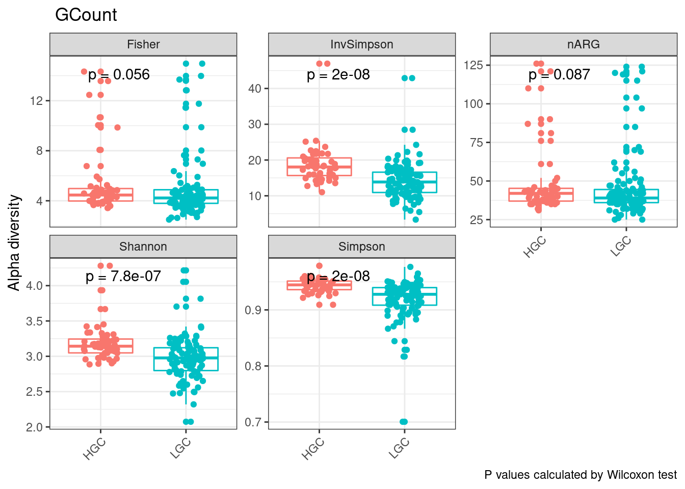
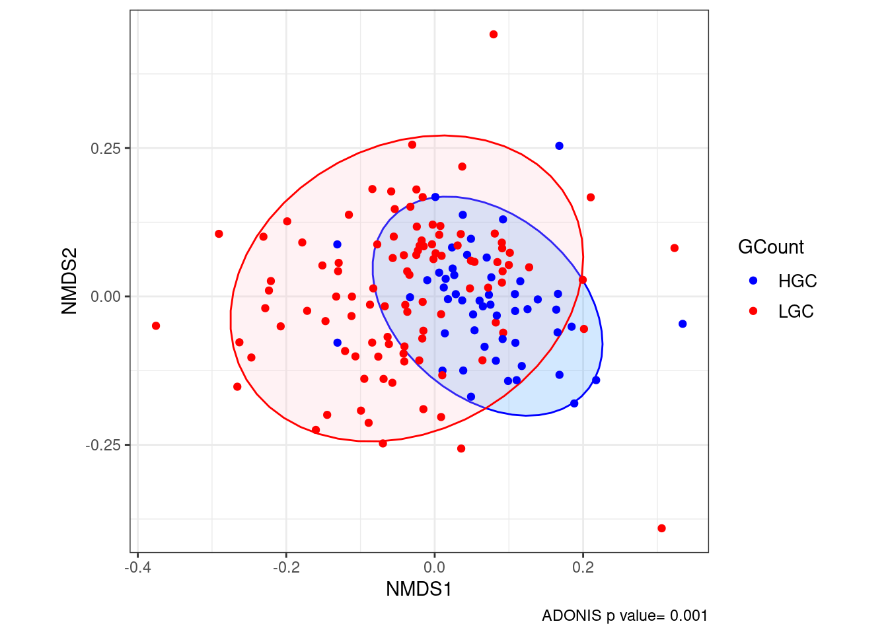
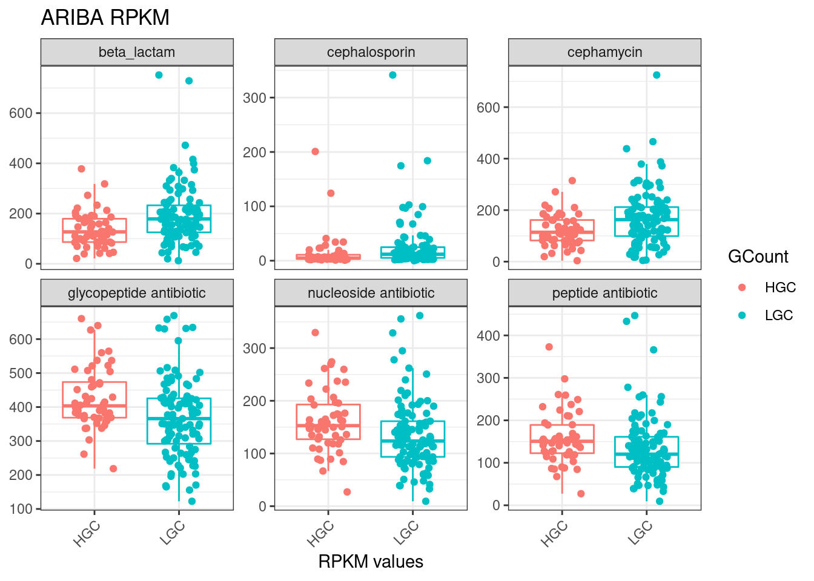
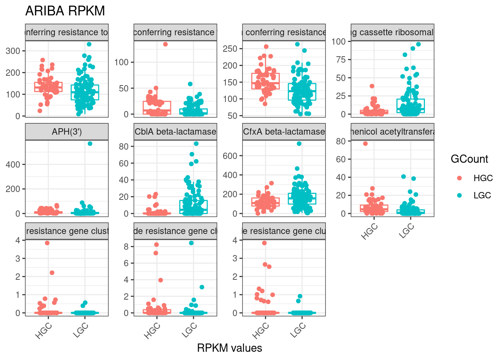

Last updated: 2022-11-13
Checks: 6 1
Knit directory: 2022_Rubio_MetaHIV/
This reproducible R Markdown analysis was created with workflowr (version 1.7.0). The Checks tab describes the reproducibility checks that were applied when the results were created. The Past versions tab lists the development history.
The R Markdown is untracked by Git. To know which version of the R Markdown file created these results, you’ll want to first commit it to the Git repo. If you’re still working on the analysis, you can ignore this warning. When you’re finished, you can run wflow_publish to commit the R Markdown file and build the HTML.
Great job! The global environment was empty. Objects defined in the global environment can affect the analysis in your R Markdown file in unknown ways. For reproduciblity it’s best to always run the code in an empty environment.
The command set.seed(20220202) was run prior to running the code in the R Markdown file. Setting a seed ensures that any results that rely on randomness, e.g. subsampling or permutations, are reproducible.
Great job! Recording the operating system, R version, and package versions is critical for reproducibility.
Nice! There were no cached chunks for this analysis, so you can be confident that you successfully produced the results during this run.
Great job! Using relative paths to the files within your workflowr project makes it easier to run your code on other machines.
Great! You are using Git for version control. Tracking code development and connecting the code version to the results is critical for reproducibility.
The results in this page were generated with repository version 268283f. See the Past versions tab to see a history of the changes made to the R Markdown and HTML files.
Note that you need to be careful to ensure that all relevant files for the analysis have been committed to Git prior to generating the results (you can use wflow_publish or wflow_git_commit). workflowr only checks the R Markdown file, but you know if there are other scripts or data files that it depends on. Below is the status of the Git repository when the results were generated:
Ignored files:
Ignored: .Rhistory
Ignored: .Rproj.user/
Ignored: output/aribaData/
Ignored: output/grootData/
Untracked files:
Untracked: analysis/11_gene_richness.Rmd
Untracked: analysis/ART.Rmd
Untracked: analysis/Riskgroup2_grouped.Rmd
Untracked: data/Metadata/generichness_data.txt
Unstaged changes:
Modified: analysis/10_grouped_significance.Rmd
Modified: analysis/_site.yml
Modified: analysis/index.Rmd
Modified: code/functions.R
Note that any generated files, e.g. HTML, png, CSS, etc., are not included in this status report because it is ok for generated content to have uncommitted changes.
There are no past versions. Publish this analysis with wflow_publish() to start tracking its development.
library(tidyverse)
library(kableExtra)
library(vegan)
library(ggpubr)
library(glue)
library(patchwork)
library(ggstatsplot)
library(broom)load("output/summarized_ariba.RDA")
load("output/rarefied_ariba.RDA")
load("output/ariba_dist.RDA")
load("output/grouped_rpkm_ariba.RDA")
metadata<-read_csv("data/Metadata/metadata.csv")
source("code/functions.R")gene_richness<-read.delim2("data/Metadata/generichness_data.txt")%>%
select(SampleID, GCount)
metadata<-metadata%>%
inner_join(gene_richness, by="SampleID")
table(metadata$GCount)
HGC LGC
53 103 ariba_alpha_rpkm<-alpha_div(ariba_rpkm, ariba_counts, metadata)
alpha_div_plot_all(ariba_alpha_rpkm, GCount)
Diversity is lower in LGC group
ariba_dist_rpkm<-ariba_dist$dist_rpkm
beta_nmds(ariba_dist_rpkm, metadata, GCount)
Resistome composition is different according to Gene Richness
amr_sig_rpkm_gcount<-sig_AMR_clin_dic(ariba_rpkm, metadata, refname_all_ariba, GCount)
amr_sig_rpkm_gcount$sig_amr%>% kable(caption="**Significant AMR accordig to Gene Richness (Ariba RPKM**")%>%kable_paper("striped")%>%scroll_box(width = "100%", height = "500px")| ref_name | p.adjust | ARO Term | ARO Accession | NCBI | init_final | CVTERM ID | ARO Name | Protein Accession | DNA Accession | AMR Gene Family | Drug Class | Resistance Mechanism |
|---|---|---|---|---|---|---|---|---|---|---|---|---|
| APH_3___IIIa.3002647.CP004067.52914_53709.233 | 0.0172338 | APH_3___IIIa | 3002647 | CP004067 | 52914_53709 | 39047 | APH(3’)-IIIa | AGV10830.1 | CP004067 | APH(3’) | aminoglycoside antibiotic | antibiotic inactivation |
| CblA_1.3002999.GQ343019.132_1023.1188 | 0.0001081 | CblA_1 | 3002999 | GQ343019 | 132_1023 | 39433 | CblA-1 | ACT97415.1 | GQ343019 | CblA beta-lactamase | cephalosporin | antibiotic inactivation |
| Clostridioides_difficile_23S.3004654.NR_076234.1.0_2900.5518 | 0.0005006 | Clostridioides_difficile_23S | 3004654 | NR_076234 . 1 | 0_2900 | 42686 | Clostridioides difficile 23S rRNA with mutation conferring resistance to erythromycin and clindamycin | NA | NR_076234.1 | 23S rRNA with mutation conferring resistance to macrolide antibiotics | glycopeptide antibiotic;lincosamide antibiotic;macrolide antibiotic;phenicol antibiotic;pleuromutilin antibiotic;streptogramin antibiotic | antibiotic target alteration |
| ErmB.3000375.AF242872.1.2131_2878.5828 | 0.0190928 | ErmB | 3000375 | AF242872 . 1 | 2131_2878 | 36514 | ErmB | AAF86219.1 | AF242872.1 | Erm 23S ribosomal RNA methyltransferase | lincosamide antibiotic;macrolide antibiotic;streptogramin antibiotic | antibiotic target alteration |
| Mef_En2_.3004659.AF251288.1.794_2000.5539 | 0.0007969 | Mef_En2_ | 3004659 | AF251288 . 1 | 794_2000 | 42698 | Mef(En2) | AAF74725.1 | AF251288.1 | major facilitator superfamily (MFS) antibiotic efflux pump | macrolide antibiotic | antibiotic efflux |
| mel.3000616.AF227521.1.3269_4487.5180 | 0.0047579 | mel | 3000616 | AF227521 . 1 | 3269_4487 | 36910 | mel | AAL73129.1 | AF227521.1 | ABC-F ATP-binding cassette ribosomal protection protein | lincosamide antibiotic;macrolide antibiotic;oxazolidinone antibiotic;phenicol antibiotic;pleuromutilin antibiotic;streptogramin antibiotic;tetracycline antibiotic | antibiotic target protection |
| rrnS.3003978.NC_005353.1.38549_40023.4108 | 0.0007969 | rrnS | 3003978 | NC_005353 . 1 | 38549_40023 | 40814 | Chlamydomonas reinhardtii 16S rRNA (rrnS) mutation conferring resistance to streptomycin | NA | NC_005353.1 | 16s rRNA with mutation conferring resistance to aminoglycoside antibiotics | aminoglycoside antibiotic;glycopeptide antibiotic;glycylcycline;nucleoside antibiotic;peptide antibiotic;tetracycline antibiotic | antibiotic target alteration |
| rrsH.3003372.U00096.223771_225312.3228 | 0.0096481 | rrsH | 3003372 | U00096 | 223771_225312 | 39956 | Escherichia coli 16S rRNA (rrsH) mutation conferring resistance to spectinomycin | NA | U00096 | 16s rRNA with mutation conferring resistance to aminoglycoside antibiotics | aminoglycoside antibiotic;glycopeptide antibiotic;glycylcycline;nucleoside antibiotic;peptide antibiotic;tetracycline antibiotic | antibiotic target alteration |
| tet32.3000196.EU722333.1.1932_3852.5146 | 0.0000211 | tet32 | 3000196 | EU722333 . 1 | 1932_3852 | 36335 | tet32 | ACH87088.1 | EU722333.1 | tetracycline-resistant ribosomal protection protein | tetracycline antibiotic | antibiotic target protection |
| tetO.3000190.M18896.2.206_2126.4234 | 0.0047579 | tetO | 3000190 | M18896 . 2 | 206_2126 | 36329 | tetO | AAA23033.2 | M18896.2 | tetracycline-resistant ribosomal protection protein | tetracycline antibiotic | antibiotic target protection |
| tetQ.3000191.Z21523.0_1974.476 | 0.0000007 | tetQ | 3000191 | Z21523 | 0_1974 | 36330 | tetQ | CAA79727.1 | Z21523 | tetracycline-resistant ribosomal protection protein | tetracycline antibiotic | antibiotic target protection |
| tetW.3000194.AJ222769.3.3686_5606.5145 | 0.0000005 | tetW | 3000194 | AJ222769 . 3 | 3686_5606 | 36333 | tetW | CAA10975.1 | AJ222769.3 | tetracycline-resistant ribosomal protection protein | tetracycline antibiotic | antibiotic target protection |
| tet_40_.3000567.AM419751.14210_15431.5150 | 0.0050736 | tet_40_ | 3000567 | AM419751 | 14210_15431 | 36706 | tet(40) | CAM12479.1 | AM419751 | major facilitator superfamily (MFS) antibiotic efflux pump | tetracycline antibiotic | antibiotic efflux |
| Chlamydia_trachomatis_23S.3004174.NR_076160.1.0_2940.4165 | 0.0423122 | Chlamydia_trachomatis_23S | 3004174 | NR_076160 . 1 | 0_2940 | 41325 | Chlamydia trachomatis 23S rRNA with mutation conferring resistance to macrolide antibiotics | NA | NR_076160.1 | 23S rRNA with mutation conferring resistance to macrolide antibiotics | glycopeptide antibiotic;lincosamide antibiotic;macrolide antibiotic;phenicol antibiotic;pleuromutilin antibiotic;streptogramin antibiotic | antibiotic target alteration |
| Campylobacter_coli_chloramphenicol.3004454.M35190.1.308_932.4426 | 0.0001015 | Campylobacter_coli_chloramphenicol | 3004454 | M35190 . 1 | 308_932 | 41665 | Campylobacter coli chloramphenicol acetyltransferase | AAA23018.1 | M35190.1 | chloramphenicol acetyltransferase (CAT) | phenicol antibiotic | antibiotic inactivation |
| tet_44_.3000556.FN594949.25244_27167.410 | 0.0000005 | tet_44_ | 3000556 | FN594949 | 25244_27167 | 36695 | tet(44) | CBH51823.1 | FN594949 | tetracycline-resistant ribosomal protection protein | tetracycline antibiotic | antibiotic target protection |
| ANT_6__Ib.3002629.FN594949.27481_28339.60 | 0.0011499 | ANT_6__Ib | 3002629 | FN594949 | 27481_28339 | 39029 | ANT(6)-Ib | CBH51824.1 | FN594949 | ANT(6) | aminoglycoside antibiotic | antibiotic inactivation |
| Brachyspira_hyodysenteriae_23S.3004133.NZ_CP015910.2.2512812_2515808.4183 | 0.0001281 | Brachyspira_hyodysenteriae_23S | 3004133 | NZ_CP015910 . 2 | 2512812_2515808 | 41260 | Brachyspira hyodysenteriae 23S rRNA with mutation conferring resistance to tylosin | NA | NZ_CP015910.2 | 23S rRNA with mutation conferring resistance to macrolide antibiotics | glycopeptide antibiotic;lincosamide antibiotic;macrolide antibiotic;phenicol antibiotic;pleuromutilin antibiotic;streptogramin antibiotic | antibiotic target alteration |
| Mycoplasma_genitalium_23S.3004616.L43967.2.171727_174461.5599 | 0.0126195 | Mycoplasma_genitalium_23S | 3004616 | L43967 . 2 | 171727_174461 | 42584 | Mycoplasma genitalium 23S rRNA mutations confers resistance to fluoroquinolone and macrolide antibiotics | NA | L43967.2 | 23S rRNA with mutation conferring resistance to macrolide antibiotics | glycopeptide antibiotic;lincosamide antibiotic;macrolide antibiotic;phenicol antibiotic;pleuromutilin antibiotic;streptogramin antibiotic | antibiotic target alteration |
| vanG.3002909.DQ212986.5984_7034.300 | 0.0032005 | vanG | 3002909 | DQ212986 | 5984_7034 | 39343 | vanG | ABA71731.1 | DQ212986 | glycopeptide resistance gene cluster;van ligase | glycopeptide antibiotic | antibiotic target alteration |
| vanTG.3002972.DQ212986.7787_9926.217 | 0.0017817 | vanTG | 3002972 | DQ212986 | 7787_9926 | 39406 | vanTG | ABA71733.1 | DQ212986 | glycopeptide resistance gene cluster;vanT | glycopeptide antibiotic | antibiotic target alteration |
| vanXYG.3003069.DQ212986.7030_7795.123 | 0.0011499 | vanXYG | 3003069 | DQ212986 | 7030_7795 | 39549 | vanXYG | ABA71732.1 | DQ212986 | glycopeptide resistance gene cluster;vanXY | glycopeptide antibiotic | antibiotic target alteration |
drugclass_sig_rpkm_gcount<-sig_group_clin_dic(ariba_rpkm_drugclass, metadata, GCount)
drugclass_sig_rpkm_gcount$sig_data%>% kable(caption="**Significant Drug Classes, Gene Richness (Ariba RPKM**")%>%kable_paper("striped")%>%scroll_box(width = "100%", height = "500px")| group_name | HGC | LGC | p.adjust |
|---|---|---|---|
| beta_lactam | 136.31936 | 195.63615 | 0.0144675 |
| cephalosporin | 14.59582 | 25.78253 | 0.0144675 |
| cephamycin | 122.46539 | 170.72691 | 0.0312697 |
| glycopeptide antibiotic | 425.54430 | 368.05848 | 0.0144675 |
| nucleoside antibiotic | 161.52101 | 134.56143 | 0.0144675 |
| peptide antibiotic | 158.21976 | 133.82231 | 0.0232056 |
drugclass_sig_rpkm_gcount$data_plot%>%
ggplot(aes(x=GCount, y=value, color=GCount)) +
geom_boxplot(outlier.shape = NA, show.legend = FALSE)+
geom_jitter(position = position_jitterdodge(dodge.width = 0.8,
jitter.width = 0.5))+
facet_wrap(~group_name, scales = "free_y")+
labs(x= "RPKM values", y=NULL, title="ARIBA RPKM") +
theme_bw()+
theme(axis.text.x = element_text(angle=45, hjust = 1))
genefamily_sig_rpkm_gcount<-sig_group_clin_dic(ariba_rpkm_genefamily, metadata, GCount)
genefamily_sig_rpkm_gcount$sig_data%>% kable(caption="**Significant Gene Families, Gene Richness (Ariba RPKM**")%>%kable_paper("striped")%>%scroll_box(width = "100%", height = "500px")| group_name | HGC | LGC | p.adjust |
|---|---|---|---|
| 16s rRNA with mutation conferring resistance to aminoglycoside antibiotics | 136.1271801 | 115.7982608 | 0.0344194 |
| 16S rRNA with mutation conferring resistance to tetracycline derivatives | 15.7693459 | 7.0635738 | 0.0344194 |
| 23S rRNA with mutation conferring resistance to macrolide antibiotics | 154.1751390 | 125.9886338 | 0.0003658 |
| ABC-F ATP-binding cassette ribosomal protection protein | 4.9995487 | 14.7749375 | 0.0031798 |
| APH(3’) | 13.2586608 | 13.1019289 | 0.0167903 |
| CblA beta-lactamase | 2.0007096 | 11.0276602 | 0.0001022 |
| CfxA beta-lactamase | 118.6925065 | 166.2359788 | 0.0344194 |
| chloramphenicol acetyltransferase (CAT) | 7.8959631 | 3.3709119 | 0.0001022 |
| glycopeptide resistance gene cluster;van ligase | 0.1926865 | 0.0092522 | 0.0023519 |
| glycopeptide resistance gene cluster;vanT | 0.5344952 | 0.1558931 | 0.0014589 |
| glycopeptide resistance gene cluster;vanXY | 0.3145302 | 0.0152466 | 0.0010399 |
genefamily_sig_rpkm_gcount$data_plot%>%
ggplot(aes(x=GCount, y=value, color=GCount)) +
geom_boxplot(outlier.shape = NA, show.legend = FALSE)+
geom_jitter(position = position_jitterdodge(dodge.width = 0.8,
jitter.width = 0.5))+
facet_wrap(~group_name, scales = "free_y")+
labs(x= "RPKM values", y=NULL, title="ARIBA RPKM") +
theme_bw()+
theme(axis.text.x = element_text(angle=45, hjust = 1))
sessionInfo()R version 4.1.2 (2021-11-01)
Platform: x86_64-pc-linux-gnu (64-bit)
Running under: Ubuntu 20.04.3 LTS
Matrix products: default
BLAS: /usr/lib/x86_64-linux-gnu/blas/libblas.so.3.9.0
LAPACK: /usr/lib/x86_64-linux-gnu/lapack/liblapack.so.3.9.0
locale:
[1] LC_CTYPE=es_ES.UTF-8 LC_NUMERIC=C
[3] LC_TIME=es_ES.UTF-8 LC_COLLATE=es_ES.UTF-8
[5] LC_MONETARY=es_ES.UTF-8 LC_MESSAGES=es_ES.UTF-8
[7] LC_PAPER=es_ES.UTF-8 LC_NAME=C
[9] LC_ADDRESS=C LC_TELEPHONE=C
[11] LC_MEASUREMENT=es_ES.UTF-8 LC_IDENTIFICATION=C
attached base packages:
[1] stats graphics grDevices utils datasets methods base
other attached packages:
[1] broom_1.0.1 ggstatsplot_0.9.4 patchwork_1.1.1 glue_1.6.2
[5] ggpubr_0.4.0 vegan_2.5-7 lattice_0.20-45 permute_0.9-7
[9] kableExtra_1.3.4 forcats_0.5.1 stringr_1.4.0 dplyr_1.0.8
[13] purrr_0.3.4 readr_2.1.2 tidyr_1.2.0 tibble_3.1.6
[17] ggplot2_3.3.5 tidyverse_1.3.1 workflowr_1.7.0
loaded via a namespace (and not attached):
[1] colorspace_2.0-3 ggsignif_0.6.3 ellipsis_0.3.2
[4] rprojroot_2.0.2 parameters_0.18.2 fs_1.5.2
[7] rstudioapi_0.13 farver_2.1.0 bit64_4.0.5
[10] fansi_1.0.3 lubridate_1.8.0 xml2_1.3.3
[13] splines_4.1.2 knitr_1.38 zeallot_0.1.0
[16] jsonlite_1.8.0 cluster_2.1.2 dbplyr_2.1.1
[19] compiler_4.1.2 httr_1.4.2 backports_1.4.1
[22] assertthat_0.2.1 Matrix_1.4-0 fastmap_1.1.0
[25] cli_3.3.0 later_1.3.0 htmltools_0.5.2
[28] tools_4.1.2 gtable_0.3.0 Rcpp_1.0.8.3
[31] carData_3.0-5 cellranger_1.1.0 jquerylib_0.1.4
[34] vctrs_0.3.8 svglite_2.1.0 nlme_3.1-157
[37] insight_0.18.2 xfun_0.30 ps_1.6.0
[40] rvest_1.0.2 lifecycle_1.0.1 rstatix_0.7.0
[43] getPass_0.2-2 MASS_7.3-56 scales_1.2.1
[46] vroom_1.5.7 hms_1.1.1 promises_1.2.0.1
[49] parallel_4.1.2 rematch2_2.1.2 yaml_2.3.5
[52] sass_0.4.1 stringi_1.7.6 highr_0.9
[55] paletteer_1.4.1 bayestestR_0.12.1 rlang_1.0.2
[58] pkgconfig_2.0.3 systemfonts_1.0.4 evaluate_0.15
[61] labeling_0.4.2 bit_4.0.4 processx_3.5.3
[64] tidyselect_1.1.2 magrittr_2.0.2 R6_2.5.1
[67] generics_0.1.2 DBI_1.1.2 pillar_1.7.0
[70] haven_2.4.3 whisker_0.4 withr_2.5.0
[73] mgcv_1.8-38 datawizard_0.5.1 abind_1.4-5
[76] performance_0.9.2 modelr_0.1.8 crayon_1.5.1
[79] car_3.0-12 utf8_1.2.2 correlation_0.8.2
[82] tzdb_0.2.0 rmarkdown_2.13 grid_4.1.2
[85] readxl_1.3.1 callr_3.7.0 git2r_0.30.1
[88] reprex_2.0.1 digest_0.6.29 webshot_0.5.2
[91] httpuv_1.6.5 statsExpressions_1.3.3 munsell_0.5.0
[94] viridisLite_0.4.0 bslib_0.3.1